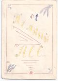

Тёмный лес
N1

ЧЁРНАЯ КОШКА
Исторический рассказ
Это случилось тёплым летним вечером накануне войны Лафании со Стефанией. Два лафанца, медленно разъезжая на велосипедах, спорили об исходе завтрашней битвы.
Тем временем стемнело, и они, увлекшись интересным разговором, часто натыкались друг на друга.
Вдруг один из них резко затормозил, другой не смог затормозить столь же резко, но, налетевши на первого, тоже остановился.
Дорогу важно переходила большая чёрная кошка...
Друзья не были слишком трусливы и суеверны, но перед битвой они предпочли быть осторожней и стали ждать, расположившись по краям дороги.
В конце аллеи кто-то появился, но заметив две тени у дороги, изменил направление.
Минут десять никого не было.
Вдруг послышались уверенные шаги. Длинная тень, широко расставляя ноги, приближалась, вот она заметила засаду по краям дороги, и шаги на какое-то мгновение замедлились, но сразу же выровнялись...
Ура! Путь свободен! Чёрная кошка не страшна лафанцам.
Человек поровнялся с лафанцами, и лунный луч, внезапно выглянув из-за тучи, осветил лицо президента Стефании...
█
БЫЛИНА
1
Как приходит к нам эрвеэсовец,
И послом-то он из Стефании,
Говорит он нам таковы слова:
Приходите, мол, на поляну в лес,
Будем драться мы с вами шишками...
Приходили мы через тёмный лес,
Через тёмный лес без дороженек.
Посмотрели мы из-за ёлочек,
Увидали мы их приманочку,
Человека три, всё из слабеньких,
Ну а метрах в стах там засадушка...
2
Как мы кинулись на приманочку,
А у ней в руках славны плёточки
Из крапивушки из давнишненькой,
А ещё в руках у них бомбочки,
У них бомбочки да из пороха,
Да из пороха из гремучего.
Вылетала тут их засадушка,
Вылетала-то, запыхалася,
Пробежала ведь стометровочку.
3
А у них велик богатырь Андрей,
И у нас-то тожь богатырь не плох.
Бились грудью в грудь, утомилися.
И вскочил тут их богатырь Андрей,
Побежал тут он бить Илью скорей.
Бьётся он с Ильёй, Илья клонится,
К земле клонится, еле держится.
Окружили тут враги Юру-то,
Бьётся с ними он - только пыль летит.
Как махнёт рукой - будет улица,
Отмахнётся он - переулочек.
4
А Илья-то наш уж к земле склонён,
Уж к земле склонён, помощь кликает.
Супротив него два врага стоят,
И один из них с длинной палкою,
Потому что он не из храбреньких,
Чтобы грудью в грудь биться на поле.
Стал Илья тогда бегать по полю,
Стал врагов швырять словно брёвнышки.
А увидит он не по силам кто -
Убежит Илья, дав затрещинку.
Ну а Игорь-то ходит по полю,
Пендали даёт, не считаючи.
Юра и Андрей бьются вновь и вновь,
А враги вокруг стали с палками.
А Алёша стал непомерно зол,
Бил врагов своих по крутым бокам.
Испугалися тут враги его,
Стали кликать, звать, чтоб пришёл Андрей.
Прибежал Андрей, дал затрещину,
Дал затрещину в четверть силушки.
И Алёша вмиг в тёмный лес влетел,
В тёмный лес влетел, там весь бой сидел.
Бьются на поле Игорь с Женею,
Бьются палками-головешками.
Подбегает тут богатырь Андрей,
Ударяет он с полной силушкой.
Да на счастье нам не по Игорю,
Не по Игорю, а по дереву.
А когда Андрей с Юрой драться стал,
Игорь вымазал Женьку сажею.
5
Надоело всем драться к вечеру,
И пошли тут все по домам своим.
Так закончилась битва славная...
До сих пор о ней вспоминаем мы,
До сих пор о ней спорим, думаем,
Но не знаем мы, чья победушка.
█
ЗА РУБЕЖОМ
Сообщение из Цереры. Население страны удвоилось, так как вошёл ещё один человек.
В Стефании проводились традиционные охоты на водомерок. Кто-то из королей, бежавших из Лафании после революции 1968 года, убил сразу трёх.
В Стефании введена свобода письма. Вместо любой буквы можно вписать любую другую, а можно и совсем ничего не вставлять.
Гермес взял контрибуцию из мусорного ящика республики Веста.
ВОЛШЕБНЫЙ ГОРОД
Баллада
В тёмном лесе,
В тёмном месте
У болота,
Где в дремоте
Меж метёлок
И осоки,
Среди ёлок
У берлоги
Кто-то стонет
Будто тонет
Под осиной
В той трясине,
Где бывает
Редко пеший,
Где гуляет
Только леший,
Страх повсюду
Нагоняя,
Лес от люда
Охраняя...
Так вот в этом
Тёмном лесе,
Тёмном месте
Каждым летом
Под охраной
Тех поганых
У трясины
Под осиной
На поляне
Там в тумане
Стены, стены -
Горе пленных,
Башни, башни,
Что не страшны
Лишь Лафанцам...
А Стефанцам
Башни ночью
Как приснятся,
Лучше срочно
Просыпаться.
█
ПО СЛЕДАМ СОБЫТИЙ НОЧИ С 23его НА 24ое АВГУСТА 1969 ГОДА
Милиция ждала у калитки Б. Они появились, но увидели милицию раньше, чем она их увидела... и сняли калитку на участке А. Милиция поехала к А, после чего была снята калитка Б. Они так и не задержаны.
ИЗ ИСТОРИЧЕСКИХ МАТЕРИАЛОВ ЛАФАНИИ
СТЕФАНИЯ
"Если меньше есть народу,
Значит, больше кислороду" -
Женя часто говорил,
Знают все, как прав он был,
Раз по этой-то причине
Вся Стефания отныне
В самом деле с каждым годом
Всё богаче кислородом.
РВС
Есть республика РВС,
Вся республика ходит в лес.
Вся республика не республика,
А какой-то страх,
Раз в республике среди публики
Есть монарх.
Вся монархия ходит в лес,
То монархия РВС.
█
Последнее изменение страницы 3 Oct 2019
ПОДЕЛИТЬСЯ: